2015 News

Christmas Day Listening with an EB flavour
Last Sunday (13 Dec 15) it was the Radio Lincolnshires Christmas Carol Service at Boston Stump, the bells were rung before and after the Service, and recorded to be broadcast on Christmas morning.
Wishing all Eastern Branch Members and their families a very merry Christmas and a Happy New Year.
NB: Don't forget the AGM at Horncastle on Sat 30 Jan 16.
EB Meeting at Swineshead St Mary 5 Dec 15
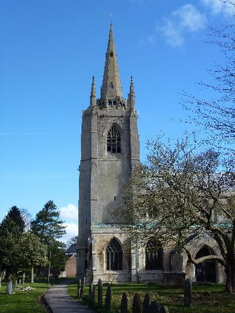
The eight bells at Swineshead were rung during the afternoon of Saturday 5 Dec 15, with Ringing Master Mick Smith in charge. Then we suffered a lock out, the vicar’s key wouldn’t let him into St Mary’s for the carol service, so there was nothing else for it, than to go round to Rhoda’s. Fortunately the tea ladies (Rhoda Reynolds, Annette Rhodes, Yvonne Smith and I) had just finished getting the tea ready. The service was held in the warmth and comfort of Swinfields, followed by tea.
The collection for the Eastern Branch bell repair fund raised £30.60, and the profit from tea added another £45.
The programme for 2016 was discussed and suggestions made for venues for next year’s ringing, outing, BBQ and so on. The AGM is the first event at Horncastle on Sat 30 Jan 16, where the programme for the year will be available, and we will have a raffle in aid of the Eastern Branch BRF. Mick Smith (ringing master), and Simon Pearson (secretary) both said they will be standing down at the AGM, so volunteers are required to fill these posts.
The President, Edward Vear, thanked all the ringers for attending, the vicar for the use of the bells, Rhoda for her hospitality and the ladies for the tea. More ringing at Swineshead enabled some ringers to have a go at methods on higher numbers than they normally can. The bells were put to good use, and it was good to see so many ringers up the tower right to the end of ringing.
Val Wild and image
Pudsey Collection - 13 Nov 15
On Friday 13th November 2015 at the surprise major practise at Kirton, we rang Pudsey surprise major and had a collection for BBC Children in Need raising £25, we also had a special cake afterwards.
Val Wild
EB Practice - Boston Stump - 7 Nov 15

The Eastern Branch practice at Boston Stump was a great experience, other than there was a lot of stairs!
Being a learner there were a lot of attributes to the practice. Not only did I improve my own ringing, it was great seeing a large amount of ringers together. My ringing improved by watching and being given tips and help by experienced ringers.
Luke Busby-Smith aged 13 - Coningsby Learner
Race-Night Fund-Raising Event, Surfleet, 24 Oct 15.
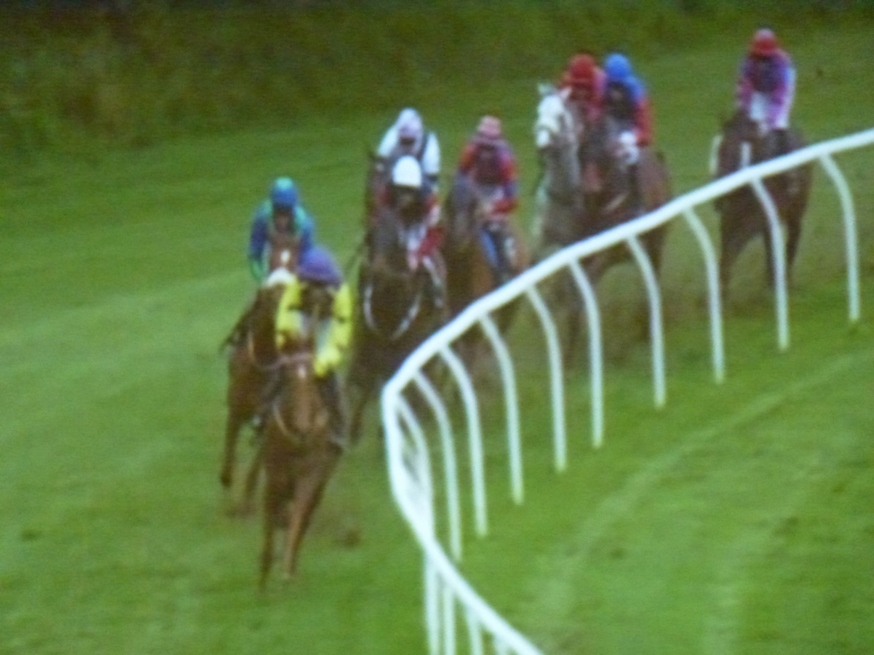
On the evening of October 24th a group of over 30 bell ringers and supporters assembled in Surfleet to indulge their gambling habit at the “Betty Collett Cup Meeting” - Eastern Branch's fund-raising Race Night in support of the Guild Bell Repair Fund.
There was a full race card of nine races, each race having eight horses. All of the horses in the first eight races had been pre-sold to owners from throughout the Guild branch for the very modest sum of £2-50 each!
As it turned out, the results turned out to be very nearly a clean sweep for ringers at Alford! Here's the list of the winners of the first eight races and their owners:
Betty Collett Cup
The last race of the night was the “Betty Collett Cup”. This was a competition between the winning horses from the previous races. The winner of the race was ‘Lucky Dip’, owned by Jan Clarke, who will be the proud holder of the Betty Collett Memorial Cup for the next 12 months, and who was also awarded a gift voucher kindly donated by John Collett.
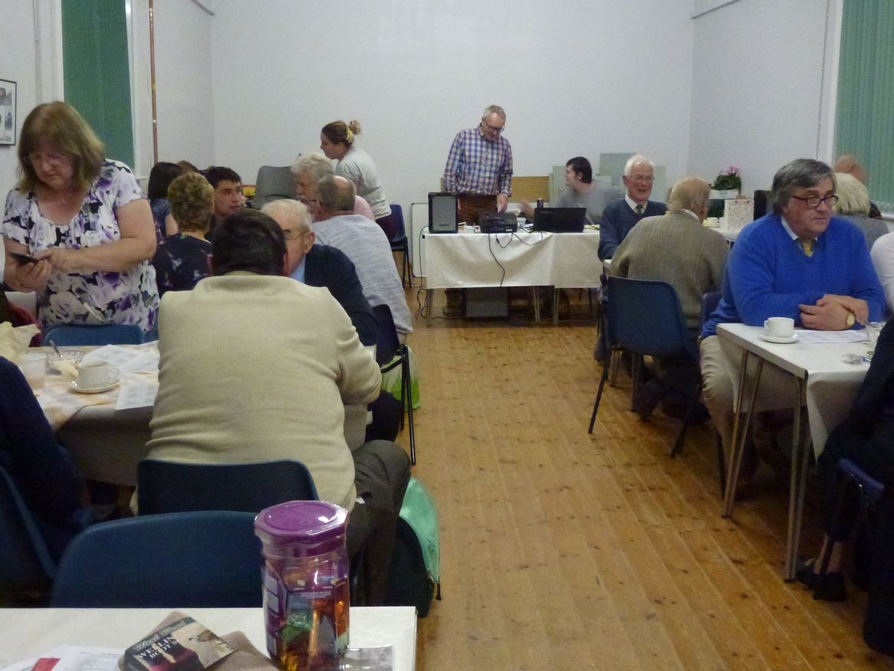
During the evening, betting on the races was fast and furious, perhaps becoming a little more so as the losers drowned their sorrows and the winners celebrated their success. At the halfway point in the proceedings there was a welcome break for a superb sausage and mash supper (followed by a choice of puddings) produced by Annette Rhodes.
The raffle provided more fun and prizes, and our thanks go to all who donated prizes.
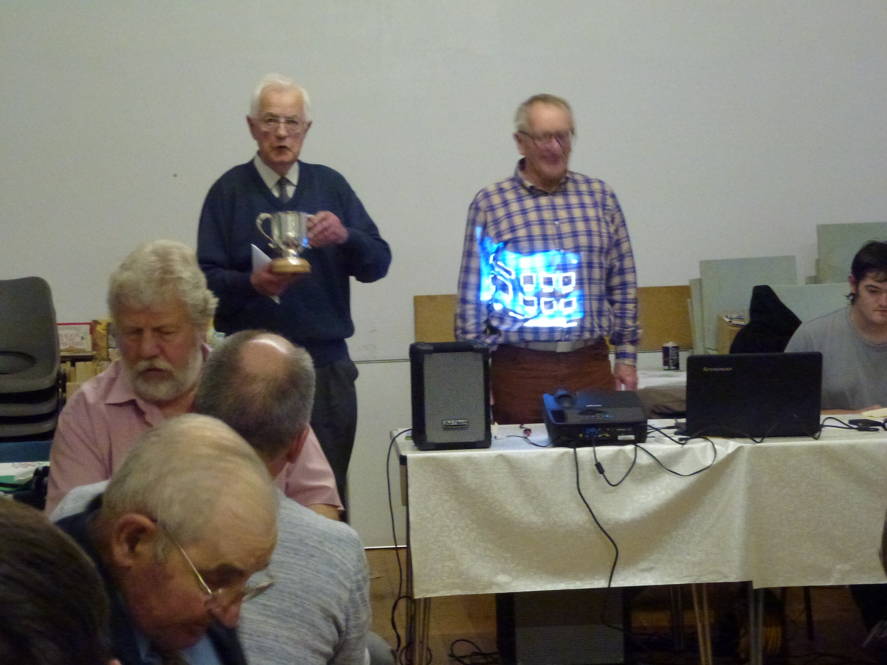
Overall, we raised over £350.00 for the Guild Bell Repair Fund, for which our thanks go to all who participated in any way in the evening. In closing, we must thank our race sponsor for the evening: David Reynolds Motor Mechanic, and also to all those who were kind enough to make an additional donation.
Phil Ford - images compliments of Val Wild
Guild 8 Bell Striking Competition - 10 Sep 15
The Eastern Branch team came 3rd out of 7 teams, on 10 Sep 15 at Stamford, All Saints in the Guild 8 bell striking competition. The test piece was 2 courses of plain bob major and the judge was Geoff Wells from Newark. Southern Branch B team won.
Image and article Val Wild
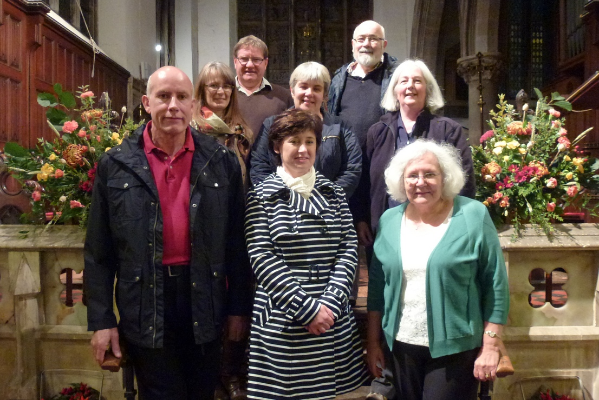
Eastern Branch Outing to North Norfolk
On Sat 3 Oct 15 approximately 35 members of the Eastern Branch and other Guild members crossed into Norfolk by coach and private cars then headed north. The experience level of the ringers present ranged across the whole spectrum as did the age range (11-80+). Despite some early drizzle the weather was good and coach occupants spent time looking for towers above tree lines and breathing in going down lanes where you hoped nothing was coming the other way. The towers visited were:
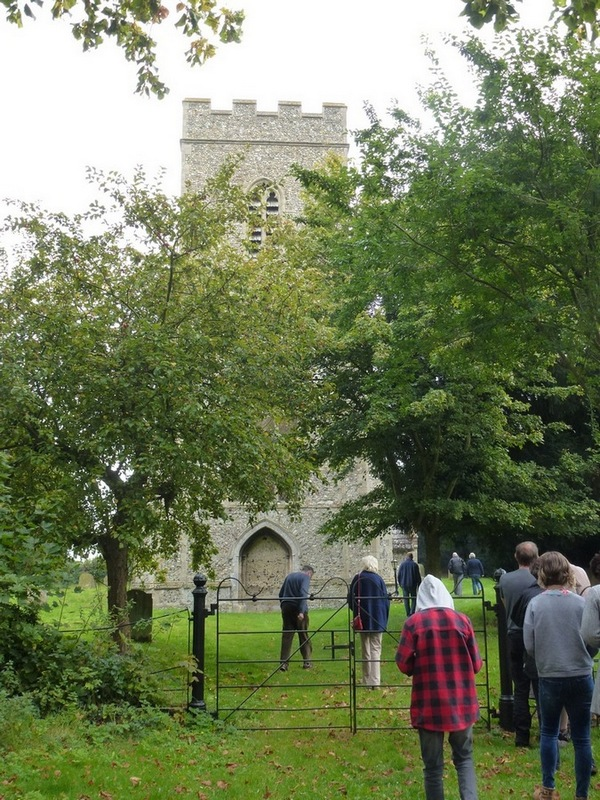
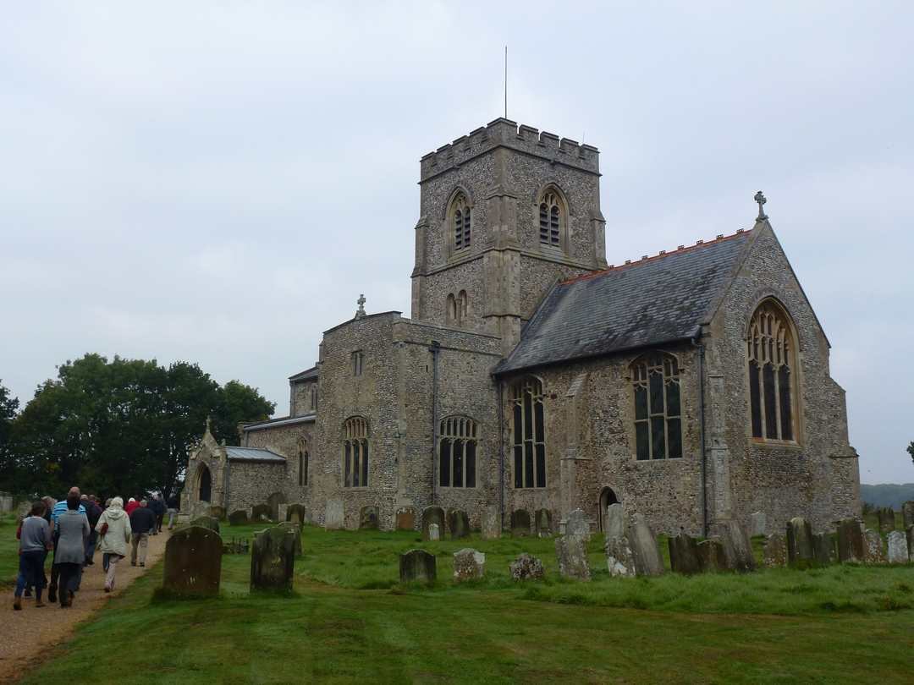
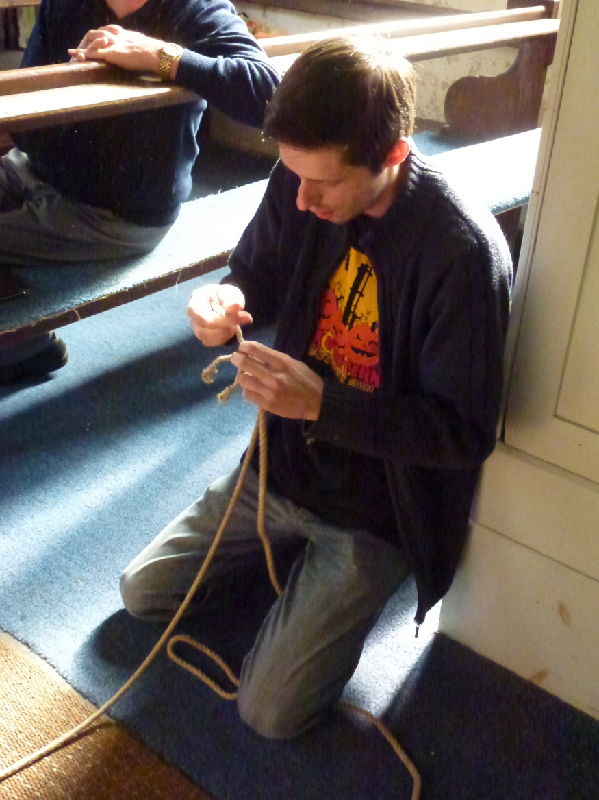
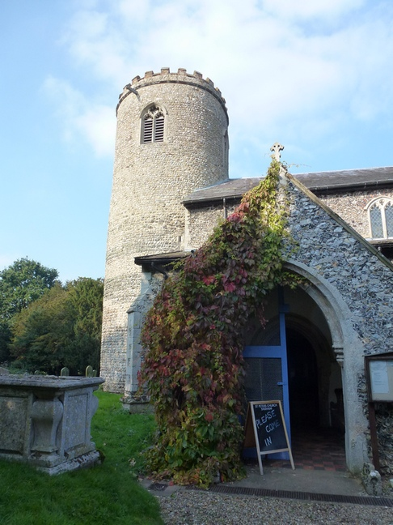
GRESSENHALL – Assumption of BVM – 10 bells – 9-2-13 in G
Mick Smith took charge; ringing included rounds and call-changes, and plain courses of Grandsire Caters and Plain Bob Royal.
BEETLEY – St Marys – 8 bells – 4-0-07 in D
Tony Barker took charge; ringing included rounds and call-changes, Little Bob Major and Grandsires Triples. The information sheet in Church stated that the bells were the lightest round of 8 in Norfolk and even the 6th rope breaking did not spoil the ringing for long.
The lunch break was taken in Dereham where some members caught up with Mark Hibbard (Eastern Branch member who moved to Norfolk earlier in the year) and his wife Sue. Even if ordering cod and chips proved problematical for Coningsby’s Captain, a good time was had by all. By 2 pm the coach was back on the road.
YAXHAM – St Peters – 6 bells – 12-1-14 in F sharp
Jo French took charge; ringing included rounds and call-changes, Plain Bob Doubles, Steadman and a touch of Cambridge Doubles.
MATTISHALL - All Saints - 6 bells - 14-0-0 in F
Bob Hardwick took charge; ringing included rounds and call changes, St Clements, Norwich and Kent.
HINGHAM – St Andrew – 8 bells – 16-1-0 in F
Unfortunately this tower was a lock out. By the time the key arrived there was only time for Val Wild to organise rounds and call changes. One ringer was overheard to say ‘interesting ringing’ and even to my inexperienced ears, it was not the Eastern Branch’s finest 15 minutes.
ASHILL – St Nicholas – 8 bells – 9-2-27 in F sharp
Bill Brotherton took charge; ringing included rounds and call changes, Steadman Triples, Cambridge Triples and Grandsire Triples
Apologies if any of the methods stated as rung are incorrect, but it was a collective effort of memory from the ringers at the back of the coach.
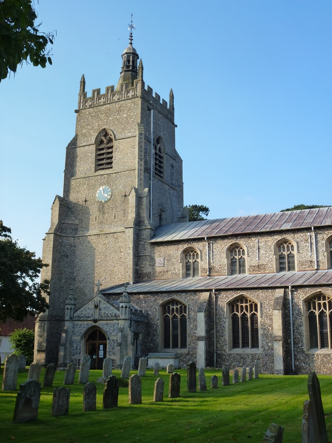
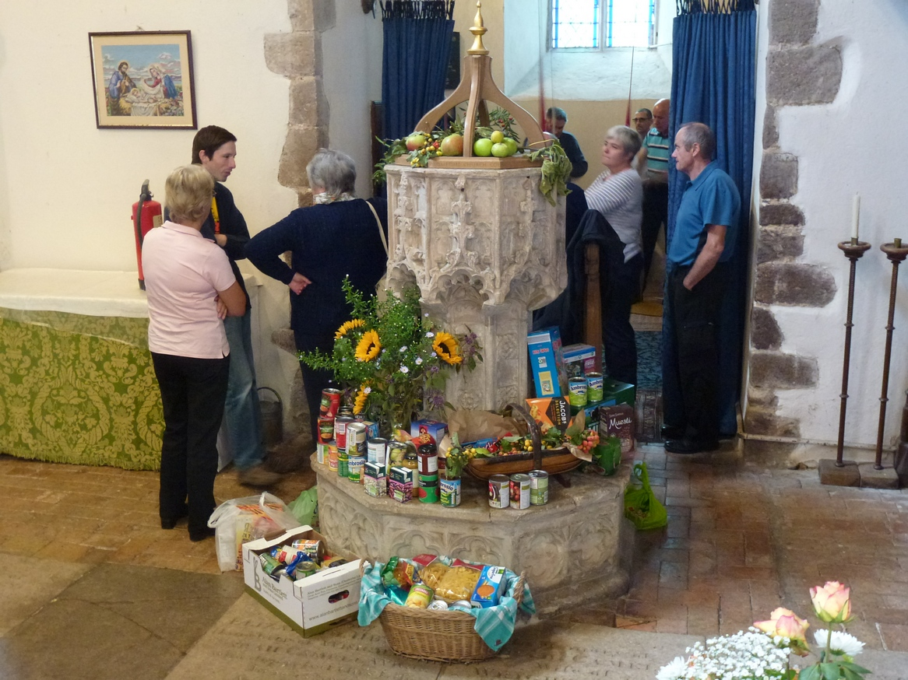
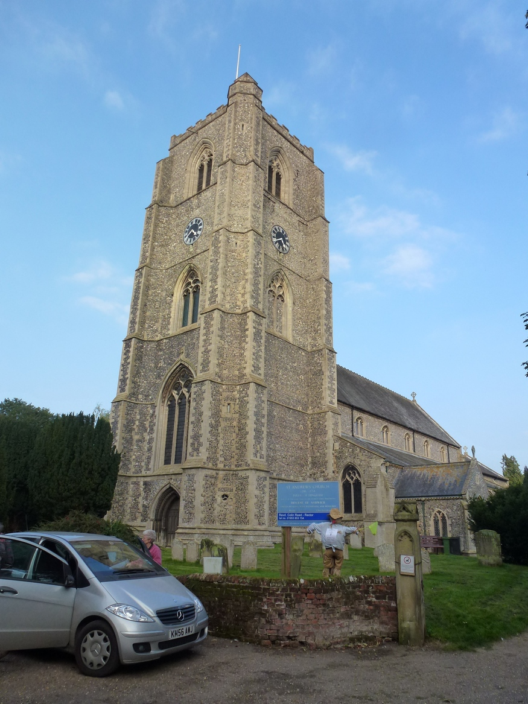
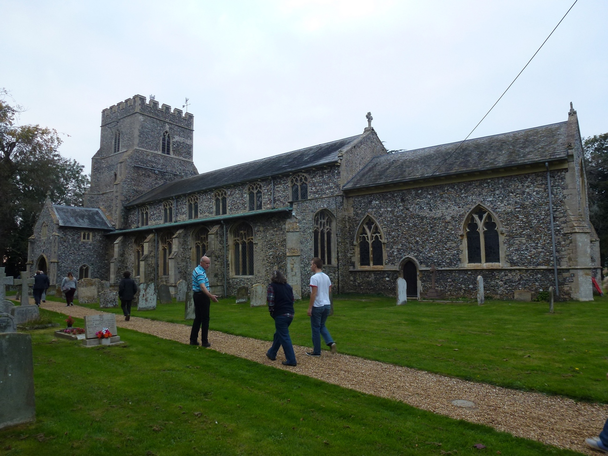
On behalf of participants of the tour I would like to express thanks to Ian Ansell for arranging the Tower Tour and Simon Pearson for arranging the transport, also to Jo French who apparently arranged the weather (obviously friends in high places). Thanks also to all members who made the day one to remember.
Tess Rowland - Images compliments of Val Wild
St. Botolph’s Church Boston/St. George’s Chapel Windsor
Approximately 15 years ago a young Chinese boy, Frankie Lee, attended Boston College, and made enquires at St. Botolph’s Church Boston to learn the art of bellringing. After usual practise sessions which he attended at St. Andrew’s Church Butterwick on Tuesday evenings Frankie was soon able to handle a bell and rang rounds and call changes. He became one of the Stump bellringers, a member of the Eastern Branch of the Lincoln Diocesan Guild, and rang his first quarter peal on 27/12/2003 on the Stump bells - 1260 Plain Bob Doubles:
Frankie was also a member of the Guild of Servers at St. Botolph’s Church Boston.
He left Boston to study at York University and apparently swapped ambitions of becoming a history teacher to train for the Ministry at St. Mary and St. Nicholas Church, Spalding three years ago.
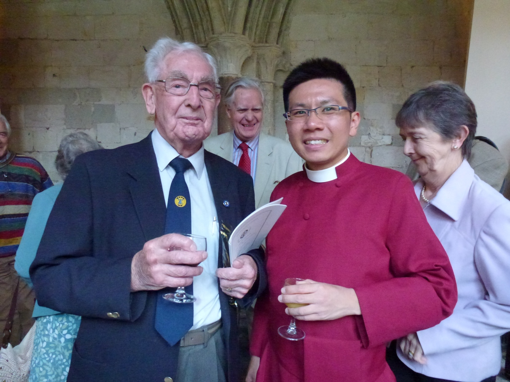
The Reverend Frankie Lee has now taken up a post at St. George’s Chapel Windsor as Minor Canon, and the Installation Service by the Dean, The Right Reverend David Conner, took place at the Evensong Service in St. George’s Chapel on Monday 7th September 2015, when five local bellringers: Bill and Margaret Daubney, Valerie Wild, John Collett and Tom Freeston, joined a coach party from Spalding to attend the Service.
One of the Reverend Frankie Lee’s first jobs will be to plan next year’s Garter Day Service when the Royal Family will be joined by Members of the Most Noble Order of the Garter. He will also serve as Chaplain and teach History and Religious Studies at St. George’s School. We all hope that Frankie will enjoy being part of the team at St. George’s Chapel Windsor, and we wish him well for the future.
Tom Freeston
Images compliments of Val Wild
Sat 12 Sep 15 - Heritage Weekend
Twelve ringers attended Benington for the start of Heritage Weekend. Bob minor, Grandsires, Cambridge and Single Oxford methods were rung.
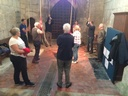
Information and image compliments of Tom Freeston
Sat 5 Sep 15 – LDGCBR – Eastern Branch Meeting
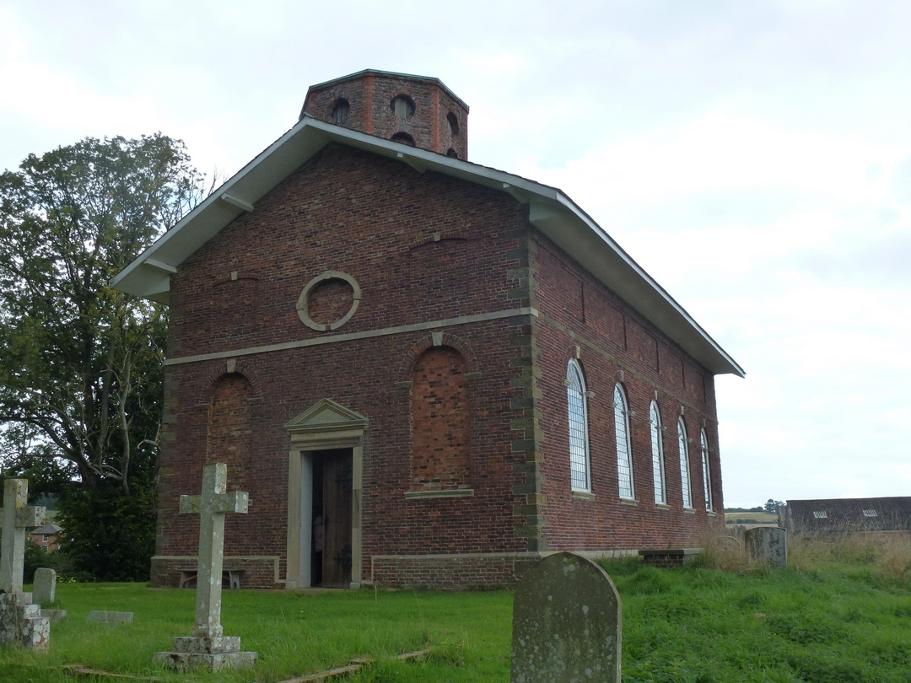
Members of the Eastern Branch met in the afternoon of Sat 5 Sep 15 for ringing at the rather unusual Langton-by-Partney Church. A variety of methods, organised by Mick Smith, were rung and the experience levels of all the ringers catered for. Following this there was an exodus of a variety of cars heading to Spilsby down (and up) lanes that make Lincolnshire’s roads notorious, again headed by Mick Smith, who obviously likes the scenic routes.
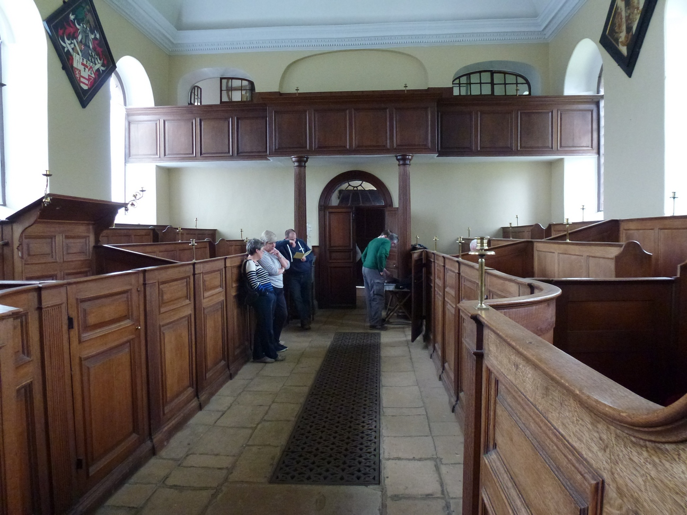
At St James Spilsby a thought provoking Service was taken by Rev Fran Jefferies, with Louis Watson providing the organ music, both received a vote of thanks at the following meeting, along with the Church Warden team that provided a magnificent buffet tea. A vote of thanks was also given to Canon Peter Coates for the use of the bells at both Langton and Spilsby.
Following the excellent meal, the meeting was opened and thanks go to Helen Brotherton who stepped in at the last minute to act as secretary. A collection for the Bell Repair Fund raised £22. The evening was rounded off with a selection of method ringing and all members present had an enjoyable time.
Tess Rowland
Images compliments of Val Wild
The Day I Saw Jesus...
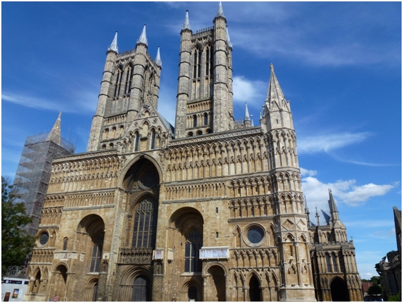
On Sunday 2nd August 2015, the Eastern Branch, plus Annette from Elloe Deaneries and Norma from Southern Branch, met in the Ringers’ Chapel at Lincoln Cathedral prior to ringing for evensong.
We numbered eighteen, which included some of the cathedral ringers, and rang a variety of methods from Cambridge Surprise Major on the Richardson eight, to rounds and call changes on twelve.
Jeremy Wheeldon welcomed us on a beautiful sunny afternoon, we could see for miles from the ringing chamber windows across Lincolnshire. After ringing for over an hour without mishap, we descended to exit the cathedral via the west door.
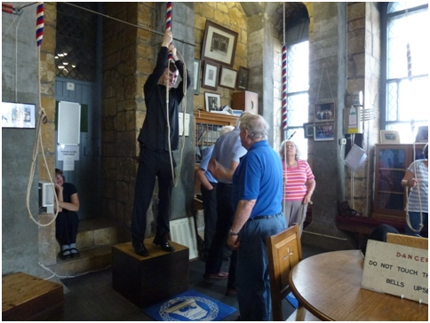
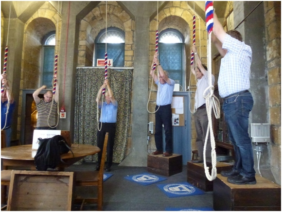
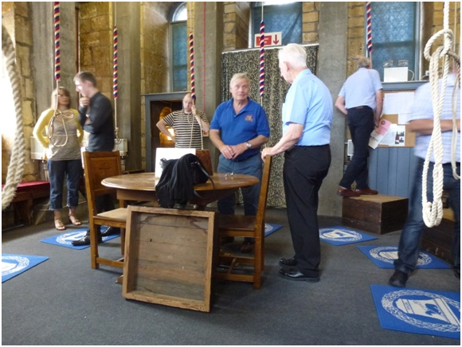
Which was when I saw the actor playing the lead role in ‘Jesus Christ Superstar’, he was pointed out to me by Jeremy who had enjoyed the production a couple of days earlier, he whispered, ‘That’s Jesus’.
Val Wild
Images compliments of Val Wild
Eastern Branch Summer BBQ - 4 Jul 15 Sibsey Trader Windmill
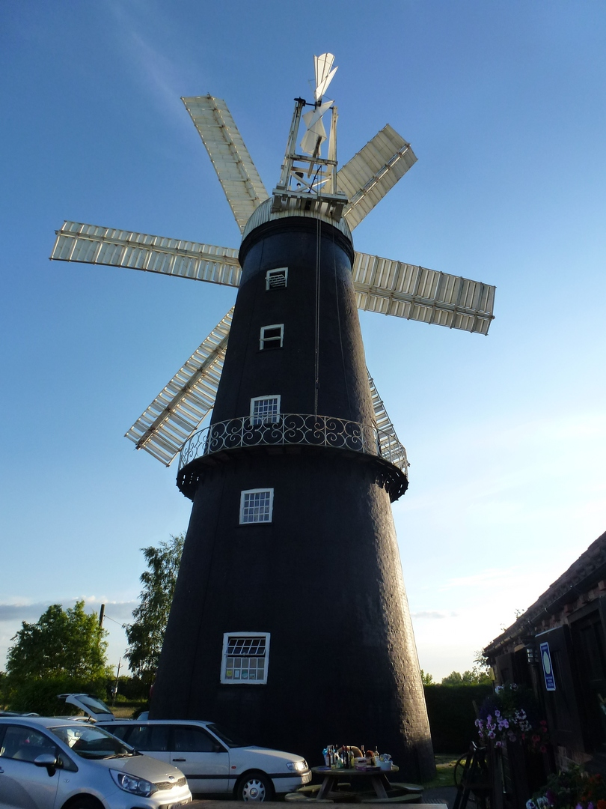
The annual summer barbecue at Sibsey Trader Mill is the Eastern Branch's main fund raising event of the year. This year it was held on Saturday 4th July. The weather was glorious! Sunny and very warm. The event started with ringing at Sibsey's St. Margaret's Church, an 8 bell tower. The bells are not easy to ring. They need to be rung at a pace and close together to bring out the best in them and to avoid, what one lady ringer was heard to say, ringing that sounded “agricultural”. Mick Smith, the Eastern branch Ringing Master ensured everyone had a ring and everyone was keen to do so! Rounds and call changes, Plain Bob, Grandsire and some Surprise were on offer. It was very warm in the Ringing Room with the sunshine streaming in through the windows. Everyone's faces were glistening by the end. Mick finished off the ringing with a superb touch of Stedman Triples.
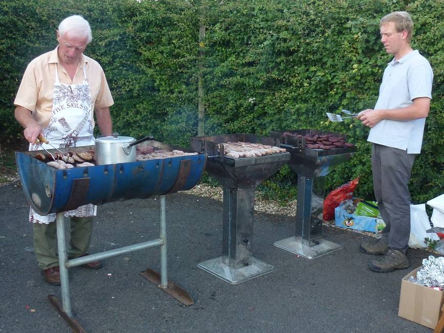

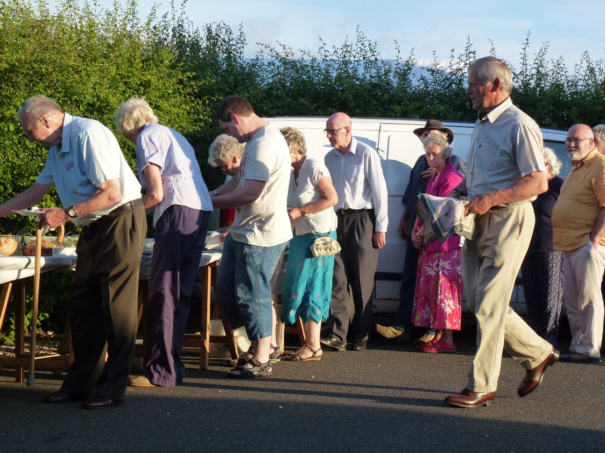
The barbecue was in an idyllic setting. In the flat, countryside of Lincolnshire the windmill, with its rotating sails, can be seen from quite a distance. The driveway to the mill is flanked on either side by wheat fields, the growing wheat gently waving in the summer breeze. The mill, apart from being a commercial concern, is also a tourist attraction, the products being sold on the ground floor of the windmill. Ian Ansell, the Custodian and manager of the mill, is also the Tower Captain at Kirton-in-Holland and was a kind and courteous host. Most of the ringers had contributed something to the barbecue. Some had provided food – salads, desserts weighing down the trestle tables. Edward Vear arranged the raffle, standing in for Simon Pearson who was unable to be there. There were lots of prizes, whisky, wine, chocolates and soft toys. Val and Annette Rhodes collected the money and served tea and coffee. The Evans family organized the quiz, the winners being a joint entry by the Coningsby ringers. Greg, a friend of Ian, provided music, playing and singing throughout the evening. The short straw must surely have been drawn by Richard Willoughby and his son. In the sweltering heat it was their task to cook the hamburgers and sausages (Lincolnshire ones, of course!) for the 90 people there – and they cleaned the barbecue afterwards too! Everyone must have been hungry because there was not much food left at the end.
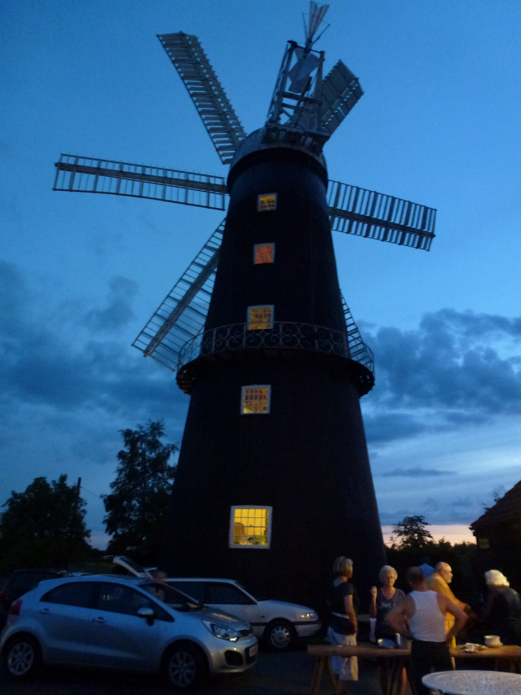
It was a very successful and enjoyable afternoon and evening. The event raised £689 for the Easter branch BRF, the second highest total in the event's history. Thanks must go to all those, including the mill staff, who worked hard to make the event a success and to Ian for allowing us to hold the barbecue at the Trader Mill.
Helen Brotherton
Images complients of Val Wild and Diana Street
EB Striking Competition 6 Jun 15 at Friskney
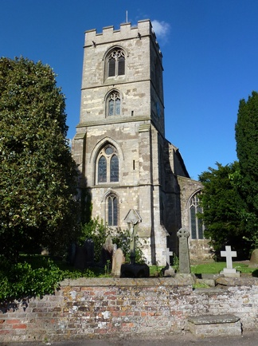
Members of the Eastern Branch and friends met at All Saints Church Friskney on Saturday 6 June 2015 to compete in the 6 Bell Striking Competition. Mick Smith started proceedings by handing round a bucket of money between the 4 Tower Captains present to ascertain the ringing order. The 4 teams rang in the order of Coningsby, Boston, Kirton and Ingoldmells.
At the end of the competition ringing Edward Vear introduced the Judge Alan Bird (Central Branch) and thanked him for his services as Judge. Alan then explained how he had marked the ringing using a ½ fault and 1 fault system and that he had given faults for ringing over the prescribed timings. He commented that all the ringing had been of a very high standard and had been hard to judge. Also mentioned was the tenor ringing which was exceptional in all teams. He also thanked Karen and Keith for helping him with timekeeping. The results were as follows:
FIRST PLACE: KIRTON – 21 faults – 91%. Practice piece was Bob Doubles and was well within the time limit. The competition piece was Bob Doubles. Alan commented that the team settled down well with some well rung rounds before starting their competition piece.
SECOND PLACE - INGOLDMELLS – 25 faults – 90%. Practice piece was call changes, which unfortunately over ran by 17 seconds which cost the team 2 faults. The competition piece was call changes which were described as ‘delightful’, with the tenor ringer receiving individual praise.
THIRD PLACE – BOSTON – 26 faults – 89%. Practice piece of Bob Doubles over ran and gained the team 1 fault. The competition piece was Bob Doubles which was rung smoothly and the tenor ringer was praised.
FOURTH PLACE – CONINGSBY – 28 faults – 88%. Practice piece was well rung rounds, well within the time limit. The competition piece was plain hunt on 5, which demonstrated a good standard of ringing. The tenor ringer gained individual praise.
Edward then presented Alan with a hamper as thanks for his services and also thanked Isabel Barker and her helpers for the tea and delicious cakes provided whilst the ringing was in progress. A reminder was given for the BBQ at Sibsey Trader Windmill on 4 July 2015 (please do not arrive before 7 pm), with ringing at Sibsey before hand. There was then open ringing until 9 pm.
Thank you to everyone who helped to make the evening a success and good luck in the Guild Striking Competition on 12 September 2015 at Middle Rasen and Tealby.
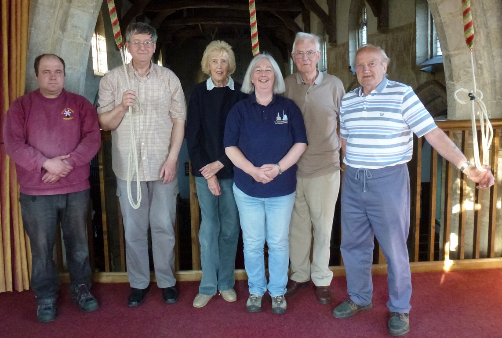
Image compliments of Val Wild.
Tess Rowland
VE Day Commemoration - 9 May 15
Towers throughout the Eastern Branch rang out in celebration of the 70th anniversary of VE Day.
Images compliments of Val Wild.
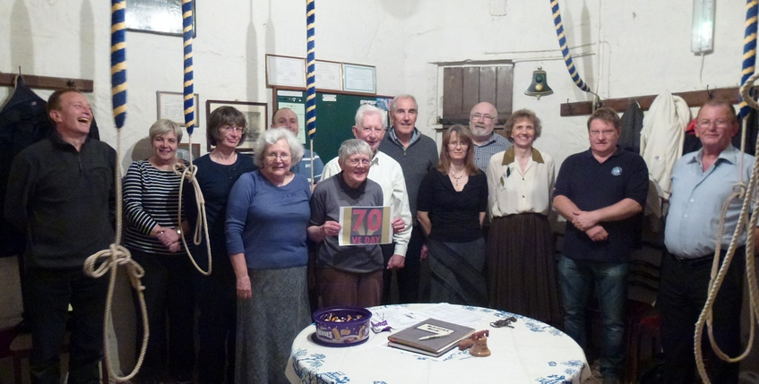
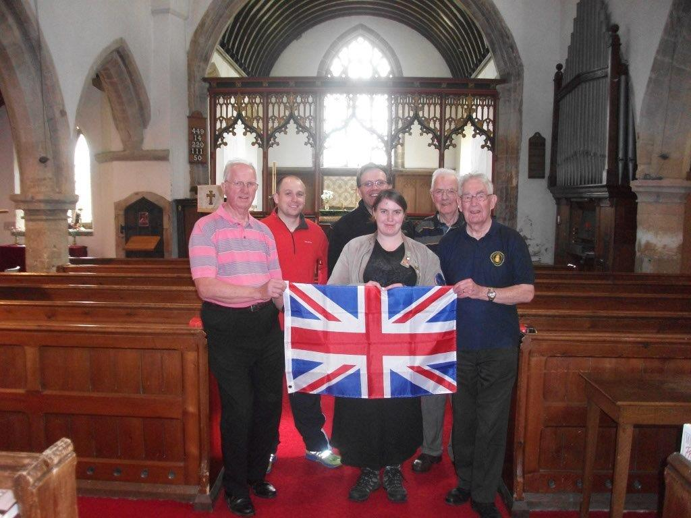
Eastern Branch Practice at Ingoldmells - 2 May 15
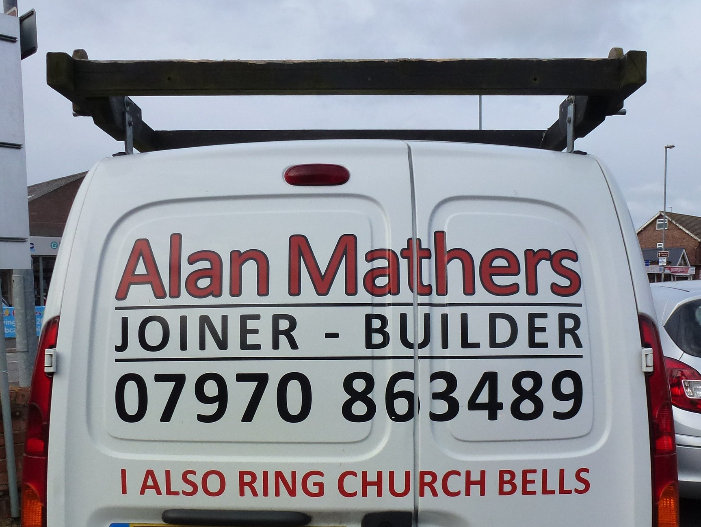
On Saturday the 2nd May, 22 members plus guests attended a very enjoyable branch meeting at Addlethorpe and Ingoldmells. The Duchess of Cambridge co- ordinated the birth of her baby daughter perfectly, enabling the branch to help celebrate the occasion! The day was noted by the turnout of a number of guest ringers including Alan Mawer “Builder and Bellringer”, Neil Bragg from North Herfordshire and Alan Stevenson from Folkingham. Neil’s family paid for part of the augmentation at Ingoldmells and he was delighted to see his inheritance had been very well spent!
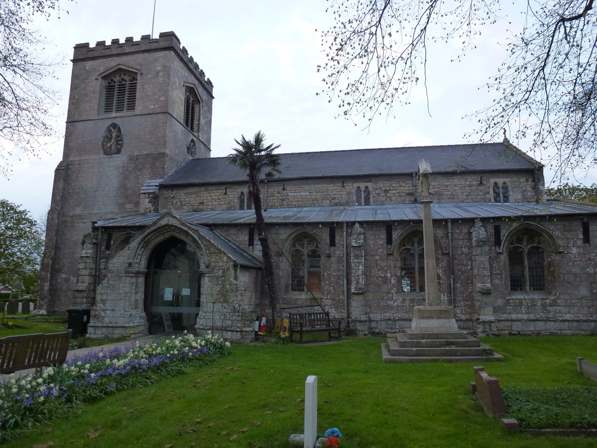
The standard of the ringing was high, and marked by a very well struck touch of Stedman at Ingoldmells. Many thanks go to the Rev Julie Donn who gave an excellent service and address at Addlethorpe, this was followed by a lovely tea organised by the “Barkers” at Ingoldmells. At the meeting Mick Smith reported on the AGM, and most of the discussion focussed on the large amount of repairs now ongoing within the branch, including Alford and the needs of Fishtoft and West Keal.
Many thanks to the local team for their support. The next meeting will be the striking competition at Friskney. The aims of the day will be to enable as many people as possible to ring in a team regardless of tower affiliations.
Simon Pearson
Images compliments of Val Wild
Eastern Branch Practice at Mablethorpe - 11 Apr 15
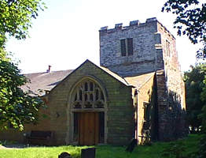
More than 20 ringers attended the Eastern Branch April Practice at Mablethorpe. As usual there was ringing to suit everyone from rounds and call changes to surprise minor, and quite a lot in between! It was a good opportunity for those who attended the Grandsire doubles workshop in March to practice their Grandsire doubles! It was especially nice to see 3 of our junior ringers at the practice and how well they are progressing.
There was a short break in the ringing to remind us about ringing on St George’s day if possible and also on Saturday 9th May at 11.00am to mark the 70th anniversary of VE day.
Joanne French
Farewell to Mark Hibbard, Tower Captain at Coningsby and Tattershall

Tuesday 24 March 2015 was a very sad evening for the Coningsby and Tattershall bellringers and also the Eastern Branch as whole, as our much loved Tower Captain Mark Hibbard rang with us for the last time, before heading east to Norfolk.
Mark has been with us for 8 years, a totally committed and enthusiastic tower captain, hell bent on teaching us the art of bell ringing. Displaying great patience as he tried (and tried and tried) to get us to follow the ‘blue line’, which often proved very challenging.
Coningsby bell ringers would like to say a huge thank you to everyone who came to ring with Mark and say goodbye, so many in fact that we could not all fit in the Tower. An ocean of tea was drunk and a small mountain of food consumed.
Mark’s protégé Bryony gave him a card and said a few words of farewell. We all wish Mark the very best in his new life in Norfolk with his wife Sue.
We will continue to build on Mark’s good teachings as he has told us he will be keeping his eye on what we are doing, also we cannot let his excellent teaching go to waste and we hope that with the support and help of the Eastern Branch this will be achieved.
Anne Hardwick
Image compliments of Val Wild.
Grandsire Workshop at Coningsby,
Sat 14 Mar 15
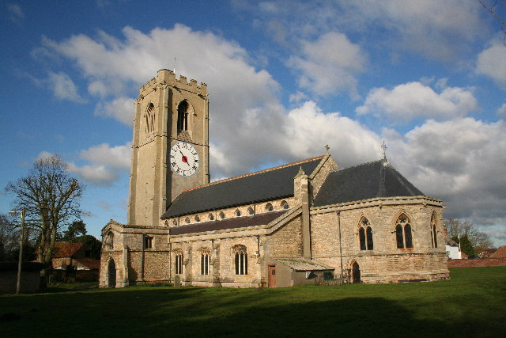
The Eastern Branch practise at Coningsby on Saturday April 14th was very well attended, our aim being to improve ringing of the Grandsire Method. Thanks go to Jo French for organising the practise and providing instructions for the method. A good mix of learners and more experienced ringers took part. Plain courses of Grandsire doubles were rung for the learners followed by Grandsire touches and Grandsire minor allowing more experienced ringers to practise conducting.Thanks also go to Joan Simpson and Russell Green who manned the refreshment table and raised £17.50 from donations for the tea/coffee and biscuits. We would also like to thank Mark Hibbard , tower captain, and the Coningsby Parochial Church Council for allowing the practise to take place. A good time was had by all.
Lynda Hankin
Eastern Branch meeting a SS Mary & Nicholas at Wrangle,
Sat 7 Mar 15 1000-1200 hrs
This was a very well attended meeting, with Mick Smith in charge of the ringing which ranged from rounds and call changes to Cambridge Surprise Minor. The event was also helped along by the fact that the Church was holding a coffee morning with refreshments and a range of stalls.
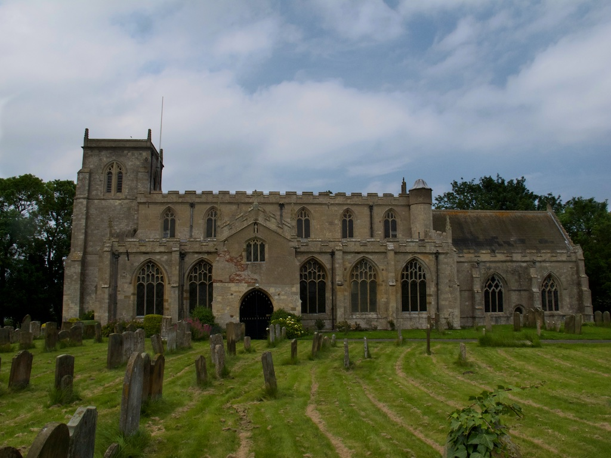
A brief meeting was called midway through the ringing with Edward Vear presenting Caitlin Meyer with a card and gift for all her hard work as ringing master over the years, a post from which she retired at the AGM in Jan 15. A similar gift was also to be given to Mark Hibbard, who unfortunately was not present at this meeting, for his work as webmaster for the Eastern Branch, which he gave up due to an imminent move to Norfolk. This will be given to him at a later date. Edward also gave Bill and Helen Brotherton a warm welcome, a couple who have just joined the Branch having recently moved from Edinburgh. A reminder was given regarding the Grandsire Workshop to be held at Coningsby on Sat 14 Mar 15 1500-1700 hrs.A collection for the Eastern Branch Bell Fund raised £18.54.
A big thank you to everyone who helped arranged this meeting and making it such an enjoyable morning for all.
NB: Caitlin and Mark would like to express their thanks for the gifts presented to them.
Tess Rowland
Eastern Branch AGM, Alford, 31st January 2015
Despite some bad weather there was a good turnout for the Eastern Branch AGM, held this year at Alford.
After some early ringing and a short service the ringers adjourned to the Church Hall for lunch prior to the formal meeting.
During the meeting Helen and William Brotherton were elected as new members, attached to Ingoldmells tower. Both are experienced ringers who have recently moved to the area.
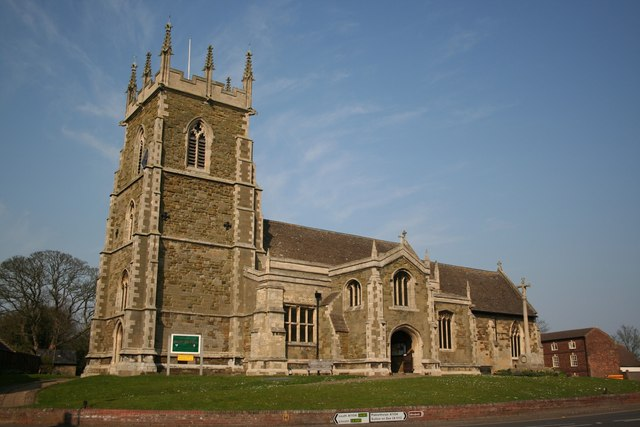
Annual reports were received and accepted from the Secretary, the Treasurer and the Maintenance Team, and thanks were expressed to Phil Ford for organising the very successful 'Race Night' fund raising event at Surfleet (another to be held again this coming year). In response to a request from Aubrey Pepper, members discussed ways that the Branch might mitigate the cost of work required on the bells and frame at Fishtoft, agreeing that further investigation and discussions were required.Most Officers were re-elected to their posts, the only exceptions being Caitlin Meyer standing down as Branch Ringing Master (replaced by Mick Smith) and Mark Hibbard standing down as Branch Website Editor (replaced by Tess Rowland).
Secretary Simon Pearson very generously offered his post as first prize in the raffle, and seemed surprised when his own ticket was drawn! There were no serious allegations of foul play and a (very cursory) investigation concluded that the result should stand (tip Simon: next year don't buy a ticket!).
A programme of events for 2015 was agreed, including a practice dedicated to Grandsire Doubles in March, and noting the Ringing Festival that the Guild is planning to hold in Lincoln in July.
Members agreed with Tony Barker in expressing sadness at the recent passing of Nora Wall and the debt of gratitude the Branch owes to Nora who was a quiet but energetic supporter of bellringing in the area. She was one of the team that built the new ringing gallery at Friskney, assisted with the augmentation at Ingoldmells and with the bell restoration projects at Tattershall and Coningsby. Nora supported ringing at Burgh-le-Marsh, Ingoldmells, Addlethorpe and across the branch. She will be missed greatly.
Edward Vear expressed his gratitude to Caitlin Meyer, the previous Ringing Master, describing the impact she had made on the development of new ringers at Alford and across the branch.
Edward expressed his thanks also to Caitlin and her team in organising the meal and thanked the vicar for an excellent service as well as Louis Watson for playing the organ. £67 was raised during the afternoon by the raffle.
After the formal meeting ringing continued at St Wilfrid's.
Simon Pearson/Mark Hibbard
Radio 4's Ringing Endorsement, Algarkirk, 23rd January 2015
Lincoln Diocesan Guild, Eastern Branch ringers, Penny Fountain, Ian Ansell, John Collett, Tom Freeston, Dave Collin and Brian Plummer found themselves taking part in an investigation by Radio 4's Sunday programme last week. A debate on how can churches “ring the changes” in order to make themselves financially and socially viable in the C21st had been sparked Andrew Lloyd Weber’s comment about churches leasing their towers as wifi masts, and so on. So, the programme’s producers decided to investigate. They called on a church in London and discovered a working Post Office and day care centre set up inside the church before turning their focus onto one of the most rural churches they could find.
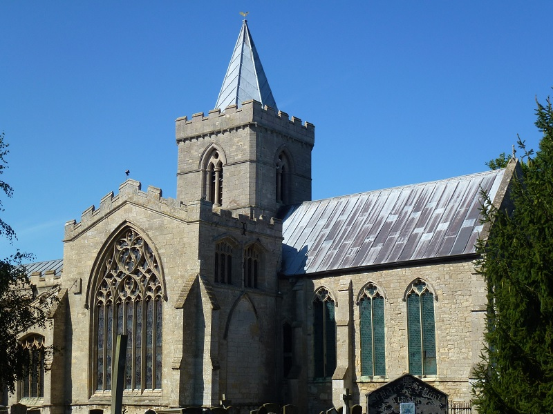
The beautiful, but archeologically endangered church of St Peter and St Paul in Algarkirk is currently tackling the problem of re-engaging the community after going through periods of virtual closure while extensive building work was undertaken. Having recently been awarded Phase One Heritage Lottery funding, the church’s Project Group are busy drawing up plans for structural work which will include the conservation of the building and the addition of amenities, such as a kitchen and toilets, and the creation of a number of heritage, social and community projects that will allow the building to become a focus for the local and wider community.One of those plans is to create a bell-ringing centre where training and development work can take place in some comfort. The bells at Algarkirk are very special. Five bells, founded by Norris were cast true in 1662, and have never had to be tuned. They have remained in the tower since their hanging. A sixth bell was added in 1935. The bells are hung anti-clockwise in the central tower. Listeners of the Sunday programme will be able to hear how wonderful they sound after a clip of plain hunting was taken for inclusion in the programme.
“Wonderful!” was the comment of BBC reporter Bob Walker as he completed his recording of the bells. Once broadcast, and for a while thereafter, you can hear the sound of St Peter and St Paul’s bells being rung under the captaincy of Ian Ansell, click [here] (Note: The programme is due to be broadcast either 25th January or 1st February 2015, but will be available online for a number of weeks thereafter.
Cheryllyn Humphreys, Church Warden and Bell Ringer